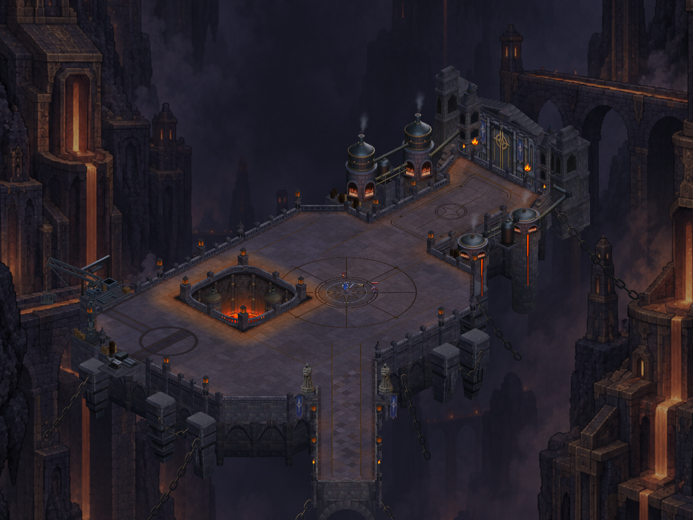
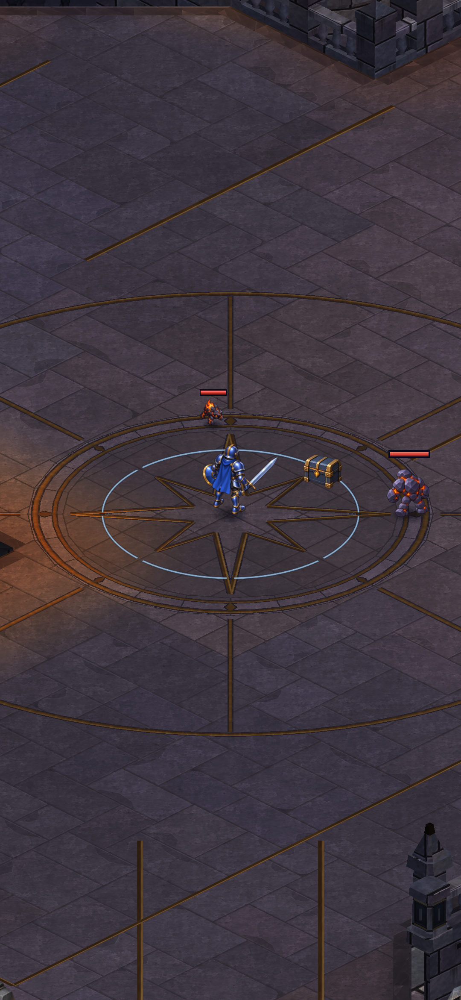
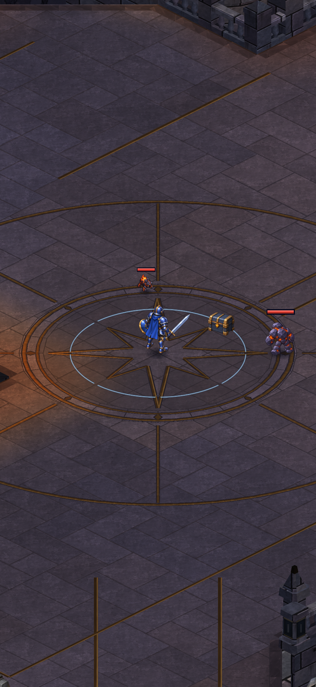
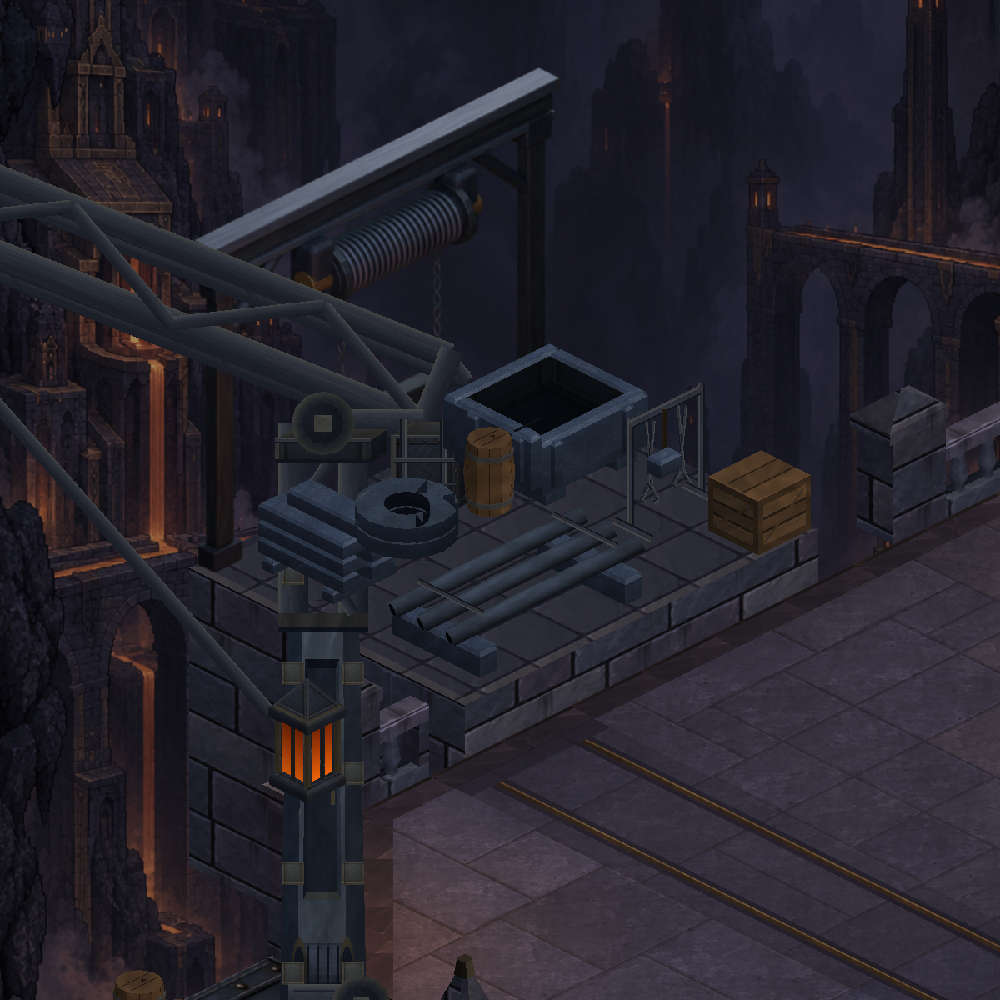
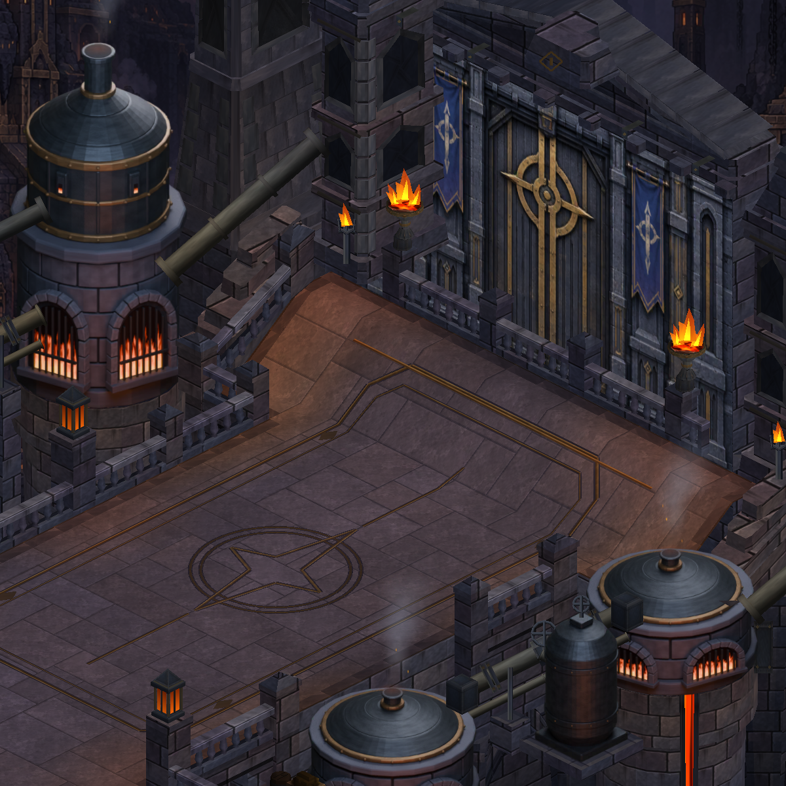
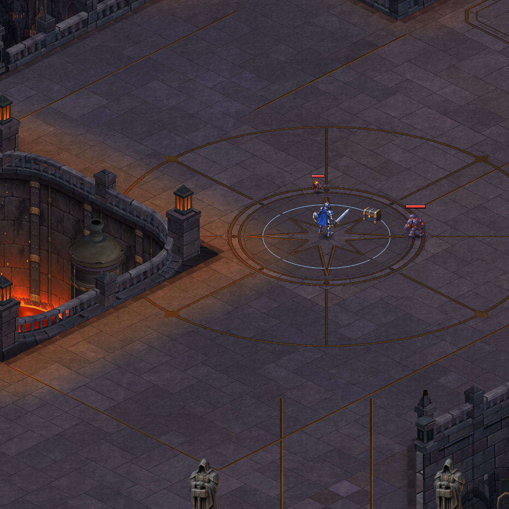

CRYPTFORGE · ACTUAL UNITY GEOMETRY
Foundry materials: stone, iron and authored hoist
The existing layout receives more coherent surface materials and an authored stock-hoist replacement. Compare the running scene's architecture with the preceding build and the approved concept.

After · actual Unity capture. Open for full resolution.
Courtyard at portrait scale
Matched staged hero position, before and after. The layout and gameplay remain unchanged. These portrait Unity captures show the new surface at phone proportions; they are not physical-device screenshots.

Before · original paving at the central approach.

After · updated surface at the same position and camera.
Industrial and architectural details

Stock station · a substantial hoist on the existing exterior shelf.
 Workshop · crane, freight track, salvage and stock share an industrial purpose.
Workshop · crane, freight track, salvage and stock share an industrial purpose.

Gate · companion architectural finish.

Court · companion surface work.
Actual Unity visual review accepted. 992 tests passed; Android build succeeded. Physical-device installation remains pending owner-run restart approval. These captures are not phone screenshots or performance measurements.
The reference is an art target; this package does not claim identical fidelity. The new machinery sits outside the existing walking route and adds no interaction.
Production notes · Verification · Complete map · Before mesh counts · After mesh counts